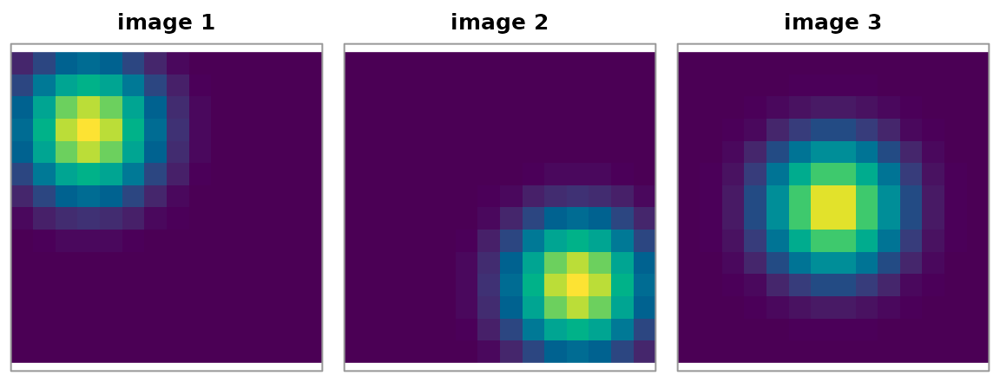
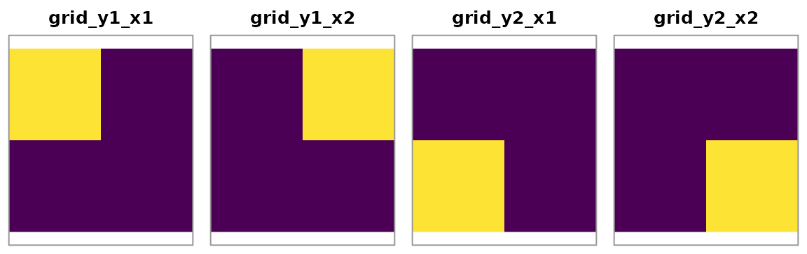
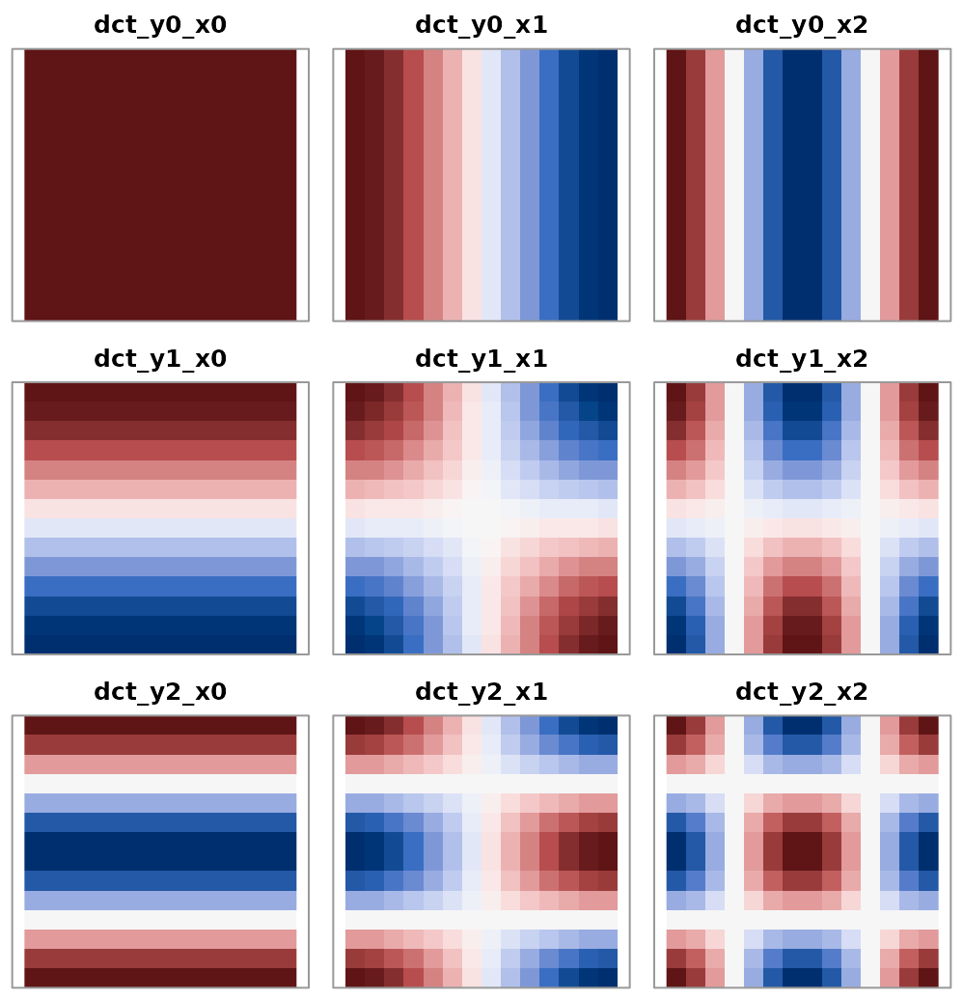
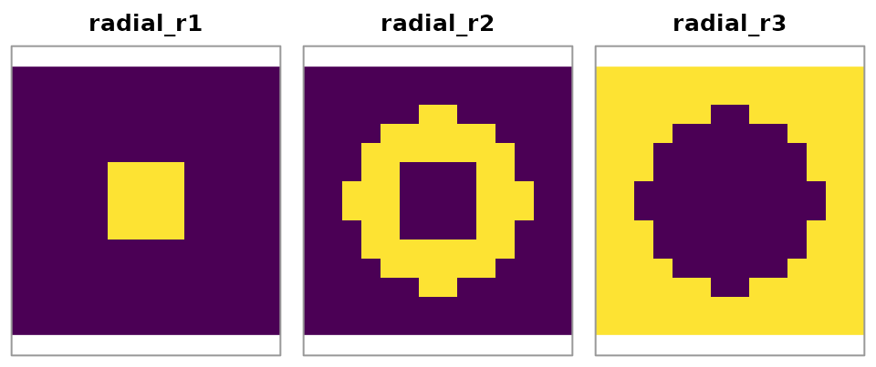

Choose a spatial pooling for VGG-16 features
Source:vignettes/spatial-pooling.Rmd
spatial-pooling.RmdA convolutional layer does not return one vector per image. It returns a stack of maps: one height-by-width map for every channel. Spatial pooling is the step that turns that stack into a feature vector. The choice decides how large the vector is and how much it remembers about where in the image each feature occurred.
This vignette describes every pooling option in
imfeatures, shows what each one keeps, and helps you pick
one. All the code below runs on small synthetic activations, so you do
not need Keras or Python to follow along.
Why pool at all?
Unpooled VGG-16 maps are large, and most of their size is spatial. The table shows the layer at the end of each convolutional block for a 224 x 224 input.
| Stage | Layer | Map | Channels | Unpooled values |
|---|---|---|---|---|
| b1 | block1_conv2 | 224 x 224 | 64 | 3,211,264 |
| b2 | block2_conv2 | 112 x 112 | 128 | 1,605,632 |
| b3 | block3_conv3 | 56 x 56 | 256 | 802,816 |
| b4 | block4_conv3 | 28 x 28 | 512 | 401,408 |
| b5 | block5_conv3 | 14 x 14 | 512 | 100,352 |
One image at block1_conv2 holds 3.2 million values.
Global average pooling reduces that to 64, one per channel, but discards
all spatial layout. The other options sit between these two
extremes.
Which option should you use?
| You want | Pooler object | String option |
|---|---|---|
| One value per channel, location ignored | global_average_pool() |
"avg" |
| One value per channel, driven by the strongest response | global_max_pool() |
"max" |
| Coarse location in a grid of cells | adaptive_grid_pool(ny, nx) |
"resize_HxW" |
| The average plus smooth layout contrasts | dct_pool(ny, nx) |
– |
| Centre versus periphery | radial_pool(breaks) |
– |
| Every position | identity_pool() |
"none" |
There are two ways to ask for pooling, and the two columns above correspond to them:
-
Pooler objects are used by
extract_feature_hierarchy(). You can give each network stage its own pooler. This is the more flexible route. -
String options are used by
extract_features(),compute_feature_similarity()andextract_vgg_features(). One string applies to every requested layer.
Both routes are covered below, starting with the pooler objects.
A small example to pool
To see what each pooler keeps, build three “images” whose single channel has one blob of activation: top-left, bottom-right, and centre. The array has the Keras layout: images x height x width x channels.
h <- 14
w <- 14
blob <- function(cy, cx, sd = 2) {
outer(seq_len(h), seq_len(w), function(y, x) {
exp(-((y - cy)^2 + (x - cx)^2) / (2 * sd^2))
})
}
acts <- array(0, dim = c(3, h, w, 1))
acts[1, , , 1] <- blob(4, 4)
acts[2, , , 1] <- blob(11, 11)
acts[3, , , 1] <- blob(7.5, 7.5)
dim(acts)
#> [1] 3 14 14 1
pool_activations() applies a pooler and returns one row
per image. pooler_feature_names() returns the matching
column names. The helper below combines the two.
pool <- function(pooler, a, stage = "b5") {
out <- pool_activations(pooler, a)
colnames(out) <- pooler_feature_names(pooler, stage, n_channels = dim(a)[4])
rownames(out) <- paste("image", seq_len(nrow(out)))
out
}Global average and global max
global_average_pool() takes the mean of each channel
over all positions. global_max_pool() takes the maximum.
Both return one column per channel.
round(pool(global_average_pool(), acts), 4)
#> b5::channel_001::gap
#> image 1 0.1185
#> image 2 0.1185
#> image 3 0.1281
round(pool(global_max_pool(), acts), 4)
#> b5::channel_001::gmp
#> image 1 1.0000
#> image 2 1.0000
#> image 3 0.9394Images 1 and 2 get the same value: the blob is the same, only its position differs, and a global summary cannot see position. Use these poolers when that is what you want, for example to describe what an image contains regardless of layout. Average pooling reflects how much of the image a feature covers; max pooling reflects only its strongest response.
Grid pooling
adaptive_grid_pool(ny, nx) lays an ny x
nx grid over the map and averages each channel within each
cell.
round(pool(adaptive_grid_pool(2, 2), acts), 3)
#> b5::channel_001::grid_y1_x1 b5::channel_001::grid_y1_x2
#> image 1 0.437 0.018
#> image 2 0.001 0.018
#> image 3 0.128 0.128
#> b5::channel_001::grid_y2_x1 b5::channel_001::grid_y2_x2
#> image 1 0.018 0.001
#> image 2 0.018 0.437
#> image 3 0.128 0.128Now the three images differ. Image 1 loads on the top-left cell
(grid_y1_x1), image 2 on the bottom-right cell
(grid_y2_x2), and the centred blob of image 3 is shared
equally by all four cells.
The panels below show which positions each of the four features averages.

The grid is adaptive: the same pooler works on a map of any size, because the cell boundaries are computed from the map. Cells never overlap and together cover every position. Two details follow from that:
- When the map size is a multiple of the grid size, all cells are equal and the mean of the cells equals global average pooling.
- When it is not, cells differ in size, and the mean of the cells is only close to the global average. A 14 x 14 map in a 4 x 4 grid has rows and columns of 4, 3, 3 and 4 positions.
gap <- pool_activations(global_average_pool(), acts)
all.equal(rowMeans(pool_activations(adaptive_grid_pool(2, 2), acts)), gap[, 1])
#> [1] TRUE
isTRUE(all.equal(rowMeans(pool_activations(adaptive_grid_pool(4, 4), acts)), gap[, 1]))
#> [1] FALSENeither grid dimension may exceed the map size.
DCT pooling
dct_pool(ny, nx) describes each channel’s map by its
lowest spatial frequencies, using a two-dimensional discrete cosine
transform. It keeps ny * nx numbers per channel, as a grid
does, but they mean something different: the first is the overall mean,
and the rest are smooth contrasts between parts of the map.
The panels show the weights of the nine features of
dct_pool(3, 3). Red weights are positive and blue weights
are negative.

dct_y0_x0 is flat: it is the mean.
dct_y0_x1 contrasts left with right, dct_y1_x0
contrasts top with bottom, and dct_y0_x2 contrasts the
middle columns with the two sides. In a name, y and
x count half-cycles along height and width, starting from
zero.
round(pool(dct_pool(2, 2), acts), 3)
#> b5::channel_001::dct_y0_x0 b5::channel_001::dct_y0_x1
#> image 1 0.119 1.47
#> image 2 0.119 -1.47
#> image 3 0.128 0.00
#> b5::channel_001::dct_y1_x0 b5::channel_001::dct_y1_x1
#> image 1 1.47 1.301
#> image 2 -1.47 1.301
#> image 3 0.00 0.000Read the rows against the panels. Image 1 (top-left) has positive
left-right (dct_y0_x1) and top-bottom
(dct_y1_x0) contrasts. Image 2 (bottom-right) has the same
two values with the signs reversed. The diagonal contrast
dct_y1_x1 is positive in both the top-left and the
bottom-right corner, so it is the same for both images. Image 3 (centre)
is balanced, so all its contrasts are zero.
Three properties are worth knowing.
The first column is global average pooling. DCT pooling therefore adds layout to the usual average-pooled features instead of replacing them.
all.equal(pool_activations(dct_pool(3, 3), acts)[, 1], gap[, 1])
#> [1] TRUEThe contrast columns are on a different scale from the mean. The mean is an average, but the contrasts are sums weighted by an orthonormal basis, so they grow with the size of the map. The same cosine pattern gives a coefficient 16 times larger on a 224 x 224 map than on a 14 x 14 map.
cosine_map <- function(n) {
a <- array(0, dim = c(1, n, n, 1))
a[1, , , 1] <- outer(rep(1, n), cos(pi * (2 * seq_len(n) - 1) / (2 * n)))
a
}
c(
map_14 = pool_activations(dct_pool(1, 2), cosine_map(14))[1, 2],
map_224 = pool_activations(dct_pool(1, 2), cosine_map(224))[1, 2]
)
#> map_14 map_224
#> 9.899495 158.391919Standardize the columns before you combine DCT features across modes
or stages. block_pca() does this by default
(feature_scale = "sd"), so the standard hierarchy workflow
needs no extra step.
order changes column order only.
"zigzag" (the default) sorts modes from low to high
frequency, as JPEG does; "raster" sorts them row by row.
Both keep the same ny * nx modes.
sub(".*::", "", pooler_feature_names(dct_pool(3, 3), "b5", 1))
#> [1] "dct_y0_x0" "dct_y0_x1" "dct_y1_x0" "dct_y2_x0" "dct_y1_x1" "dct_y0_x2"
#> [7] "dct_y1_x2" "dct_y2_x1" "dct_y2_x2"
sub(".*::", "", pooler_feature_names(dct_pool(3, 3, order = "raster"), "b5", 1))
#> [1] "dct_y0_x0" "dct_y0_x1" "dct_y0_x2" "dct_y1_x0" "dct_y1_x1" "dct_y1_x2"
#> [7] "dct_y2_x0" "dct_y2_x1" "dct_y2_x2"Grid or DCT? Both keep coarse layout at the same
cost. Grid cells are local, non-negative for post-ReLU activations, and
easy to read. DCT columns separate “how much” (the mean) from “where”
(the contrasts) and are ordered from coarse to fine, and the modes of a
smaller pooler are a subset of those of a larger one.
vgg16_block_end_spec() uses DCT pooling for that
reason.
Radial pooling
radial_pool(breaks) averages each channel within rings
around the centre of the map. It keeps eccentricity and discards
direction.
round(pool(radial_pool(), acts), 3)
#> b5::channel_001::radial_r1 b5::channel_001::radial_r2
#> image 1 0.077 0.146
#> image 2 0.077 0.146
#> image 3 0.743 0.222
#> b5::channel_001::radial_r3
#> image 1 0.112
#> image 2 0.112
#> image 3 0.013Image 3, the centred blob, is strongest in the inner ring. Images 1 and 2 again receive identical values: they sit at the same distance from the centre.

Radius runs from 0 at the centre to 1 at the corners. On a square map
the middle of each edge is at about 0.71, so the default outer ring
(0.5 to 1) includes the corners and is much
larger than the inner rings. On this 14 x 14 map the three rings hold
16, 52 and 128 positions.
breaks must increase and lie in [0, 1].
Positions outside the range of breaks are left out, so
radial_pool(c(0, 0.5)) pools the central region only. On
very small maps a ring can hold no positions; its columns are then zero
and you get a warning.
No pooling
identity_pool() keeps every position. A 4-D map is
flattened to H * W * C columns. Dense layers such as
fc1 have no spatial axes, and every pooler
returns them unchanged, which is why one pooler can be applied to a spec
that mixes convolutional and dense stages.
dim(pool_activations(identity_pool(), acts))
#> [1] 3 196
fc <- matrix(rnorm(3 * 5), 3, 5)
identical(pool_activations(dct_pool(2, 2), fc), fc)
#> [1] TRUEColumn names and order
Every pooler writes its columns channel by channel: all features of
channel 1, then all features of channel 2. Names have three parts
separated by :: – stage, channel and spatial feature.
pooler_feature_names(global_average_pool(), "b5", n_channels = 2)
#> [1] "b5::channel_001::gap" "b5::channel_002::gap"
pooler_feature_names(adaptive_grid_pool(1, 2), "b5", n_channels = 2)
#> [1] "b5::channel_001::grid_y1_x1" "b5::channel_001::grid_y1_x2"
#> [3] "b5::channel_002::grid_y1_x1" "b5::channel_002::grid_y1_x2"
pooler_feature_names(radial_pool(), "b5", n_channels = 1)
#> [1] "b5::channel_001::radial_r1" "b5::channel_001::radial_r2"
#> [3] "b5::channel_001::radial_r3"Because names carry the spatial feature, you can select columns after extraction. For example, to reduce a DCT block to its average-pooled columns:
Pooling in a VGG-16 hierarchy
A spec says which layers to tap and how to pool each one.
vgg16_block_end_spec() is the ready-made choice: one tap at
the end of each block, with DCT pooling that keeps fewer spatial modes
as the maps get smaller and the channels more numerous.
spec <- vgg16_block_end_spec()
spec
#> VGG hierarchy spec (vgg16)
#> Stages: b1, b2, b3, b4, b5, fc1, logits
#> Taps: block1_conv2, block2_conv2, block3_conv3, block4_conv3, block5_conv3, fc1, classifier_logits
#> Pooling:
#> b1 DCT pool 6 x 6 (zigzag)
#> b2 DCT pool 5 x 5 (zigzag)
#> b3 DCT pool 4 x 4 (zigzag)
#> b4 DCT pool 3 x 3 (zigzag)
#> b5 DCT pool 2 x 2 (zigzag)
#> fc1 Identity pool
#> logits Identity pool| Stage | Map | Channels | Columns per channel | Columns |
|---|---|---|---|---|
| b1 | 224 x 224 | 64 | 36 | 2,304 |
| b2 | 112 x 112 | 128 | 25 | 3,200 |
| b3 | 56 x 56 | 256 | 16 | 4,096 |
| b4 | 28 x 28 | 512 | 9 | 4,608 |
| b5 | 14 x 14 | 512 | 4 | 2,048 |
| fc1 | – | 4096 | 1 | 4,096 |
| logits | – | 1000 | 1 | 1,000 |
The stages end up between 1,000 and 4,608 columns wide, instead of ranging from 64 (average-pooled block 1) to millions (unpooled block 1).
To choose your own pooling, pass pooling to
vgg_hierarchy_spec() in one of three forms.
# 1. Nothing: average pooling for convolutional stages
vgg_hierarchy_spec("vgg16")$pooling$b3
#> Global average pool
# 2. One pooler for every stage (dense stages pass through unchanged)
vgg_hierarchy_spec("vgg16", pooling = adaptive_grid_pool(3, 3))$pooling$b3
#> Adaptive grid pool 3 x 3
# 3. A named list with one pooler per stage
spec <- vgg_hierarchy_spec(
"vgg16",
taps = c(b4 = "block4_conv3", b5 = "block5_conv3", fc1 = "fc1"),
pooling = list(
b4 = dct_pool(3, 3),
b5 = radial_pool(),
fc1 = identity_pool()
)
)
spec
#> VGG hierarchy spec (vgg16)
#> Stages: b4, b5, fc1
#> Taps: block4_conv3, block5_conv3, fc1
#> Pooling:
#> b4 DCT pool 3 x 3 (zigzag)
#> b5 Radial pool (0, 0.25, 0.5, 1)
#> fc1 Identity poolExtraction then needs Keras and the VGG-16 weights, so the next chunk is not run here.
raw <- extract_feature_hierarchy(image_paths, spec = spec)
vapply(raw$blocks, ncol, integer(1))
head(colnames(raw$blocks$b4))Maps are pooled batch by batch, so the full-resolution activations
are never held for all images at once. See
vignette("feature-hierarchies") for what to do with the
blocks.
String options for single layers and tiers
extract_features(),
compute_feature_similarity() and
extract_vgg_features() take a string instead of a pooler
object.
| String | What it does | Values for a 14 x 14 x 512 map |
|---|---|---|
"none" |
Returns the full map | 100,352 |
"avg" |
Global average pooling | 512 |
"max" |
Global max pooling | 512 |
"resize_HxW" |
Resizes the map to H x W,
then flattens |
H * W * 512 |
# One layer, one image
f <- extract_features(img, layers = "block5_conv3", spatial_pooling = "avg")
# A tier of layers, many images: 13,824 columns for the high tier
high <- extract_vgg_features(imgs, tier = "high", pooling = "resize_3x3")
# Similarity matrices that ignore layout
sim <- compute_feature_similarity(
imgs,
layers = c("block4_conv3", "block5_conv3"),
spatial_pooling = "avg"
)Some details:
-
extract_features()andcompute_feature_similarity()default to"none".extract_vgg_features()defaults to"avg". -
"resize_HxW"accepts any positiveHandW, for example"resize_3x3"or"resize_2x4". Shrinking uses area averaging: each output cell is the mean of the positions it covers. Averaging the cells of a resized map therefore reproduces"avg". Resizing runs in TensorFlow. -
extract_vgg_features()applies the same pooling to every layer in the tier and concatenates the results. - With
"none", similarities compare activations position by position, so two images with the same content in different places can look dissimilar.
How the two routes correspond
| String option | Pooler object | Same numbers? |
|---|---|---|
"avg" |
global_average_pool() |
Yes |
"max" |
global_max_pool() |
Yes |
"none" |
identity_pool() |
Yes, in the same order |
"resize_HxW" |
adaptive_grid_pool(H, W) |
Yes when the map size is a multiple of H
and W, but in a different order |
The last row needs care. When the map size is not a multiple of the
target, "resize_HxW" splits boundary positions between
neighbouring cells by area, while adaptive_grid_pool()
assigns each position to exactly one cell. And the two flatten
differently: "resize_HxW" and "none" give a
vector in which height varies fastest, then width, then channel, while
the pooler objects order columns by channel first. Do not mix columns
from the two routes by position; use the names from
pooler_feature_names() or reshape explicitly.
Activations from other backends
The poolers work on any activation array, not only on Keras output.
PyTorch returns maps as images x channels x height x width; say so with
layout = "nchw".
torch_like <- aperm(acts, c(1, 4, 2, 3))
dim(torch_like)
#> [1] 3 1 14 14
all.equal(
pool_activations(dct_pool(2, 2), torch_like, layout = "nchw"),
pool_activations(dct_pool(2, 2), acts)
)
#> [1] TRUESummary
- Pooling decides how much spatial layout your features keep. Global average pooling keeps none; grid, DCT and radial pooling keep a little; no pooling keeps all of it.
- For a VGG-16 hierarchy, start with
vgg16_block_end_spec(). Its DCT blocks contain the average-pooled features as their first mode. - For a single tier,
extract_vgg_features(pooling = "avg")is the compact default, and"resize_3x3"adds coarse layout. - DCT contrast columns scale with map size. Standardize columns before combining them.